Foto in PDF
Trasforma una o più foto in un PDF curato.
Uno scanner che capisce ogni pagina
Trasforma documenti, ricevute, carte d’identità, appunti e foto in PDF curati. Poi modificali, firmali, proteggili e condividili senza pubblicità né filigrane.
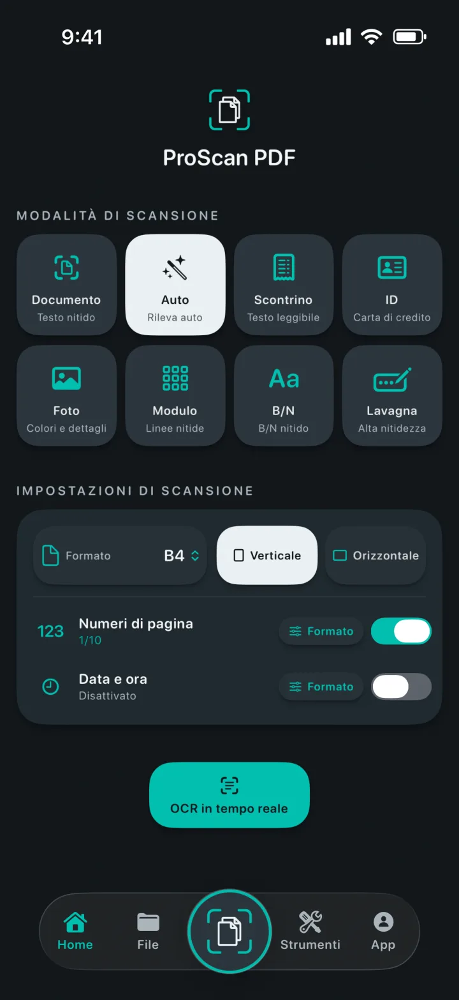
Uno scanner che capisce ogni pagina
Scegli la modalità giusta, inquadra la pagina e lascia che lo scanner documenti di Apple gestisca l’acquisizione. Imposta formato, orientamento, numeri di pagina e data e ora prima di iniziare.
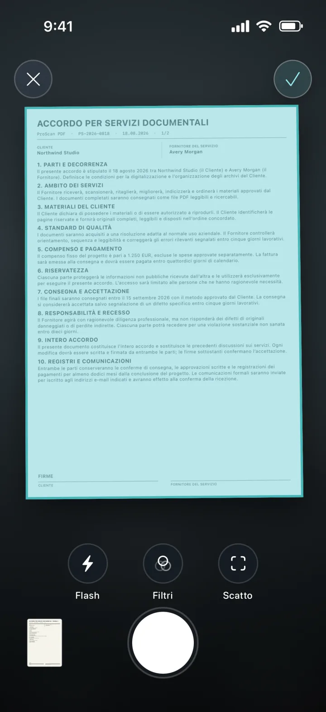
Tutti i tuoi strumenti PDF
Importa, converti, modifica e crea PDF da un unico spazio di lavoro.
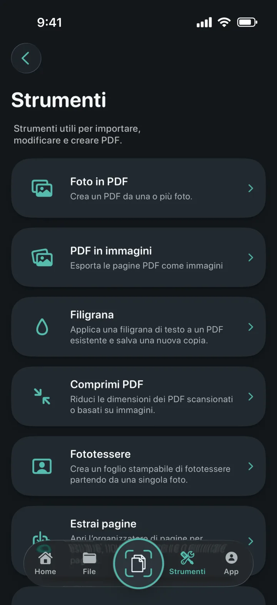
Trasforma una o più foto in un PDF curato.
Esporta ogni pagina come immagine, poi salvala o condividila.
Aggiungi una filigrana colorata a una nuova copia del PDF.
Riduci le dimensioni dei PDF scansionati o basati su immagini.
Ritaglia, controlla ed esporta formati esatti o fogli stampabili.
Estrai, riordina, inserisci o elimina pagine PDF.
Crea file Word modificabili preservando il layout quando possibile.
Crea copie ricercabili e trova il testo nel visualizzatore.
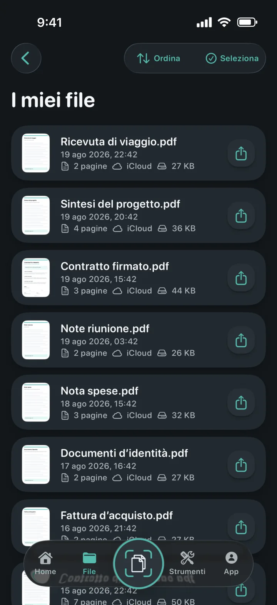
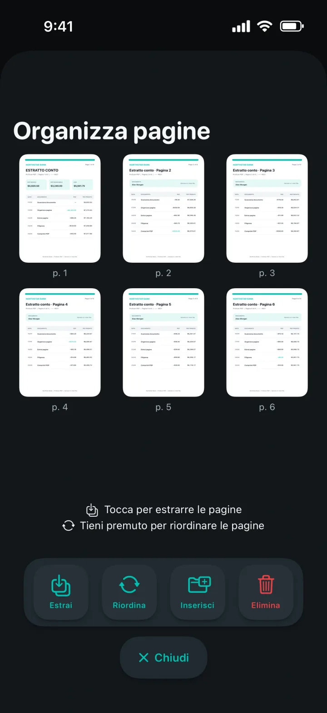
Documenti sempre in ordine
Le copie locali rendono la libreria veloce da aprire. Il backup privato su iCloud ti aiuta a ritrovare i documenti quando passi a un altro dispositivo Apple.
La privacy è parte del progetto
Scansione, OCR ed elaborazione PDF avvengono localmente sul tuo dispositivo. ProScan PDF non carica i documenti sui propri server.
Leggi l’informativa sulla privacyOCR e documenti ricercabili
Acquisisci testo in tempo reale, estrai contenuti modificabili o crea copie PDF ricercabili. Tutto viene elaborato sul tuo iPhone o iPad.
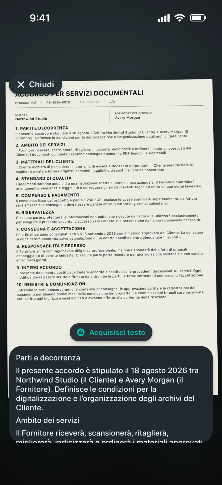
Pensato per te
Ogni tema trasforma l’interfaccia dell’app e include un’icona Home coordinata.
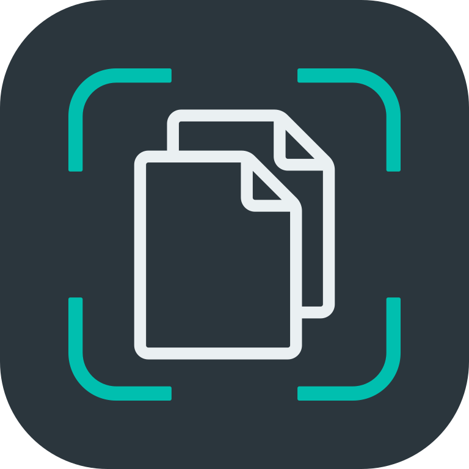
Turchese scanner e bianco carta su grafite.
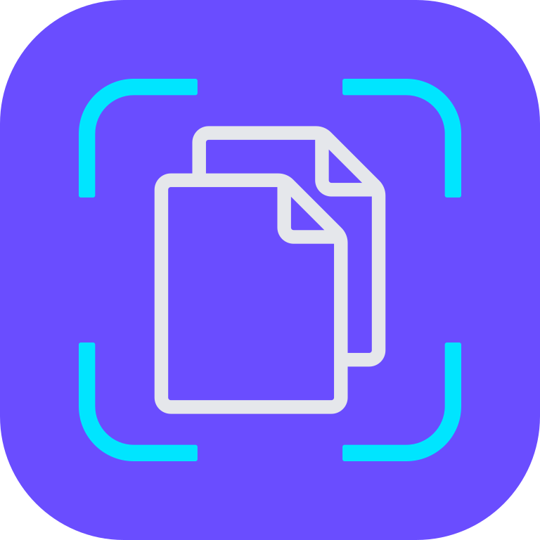
Ciano elettrico e viola su nero profondo.
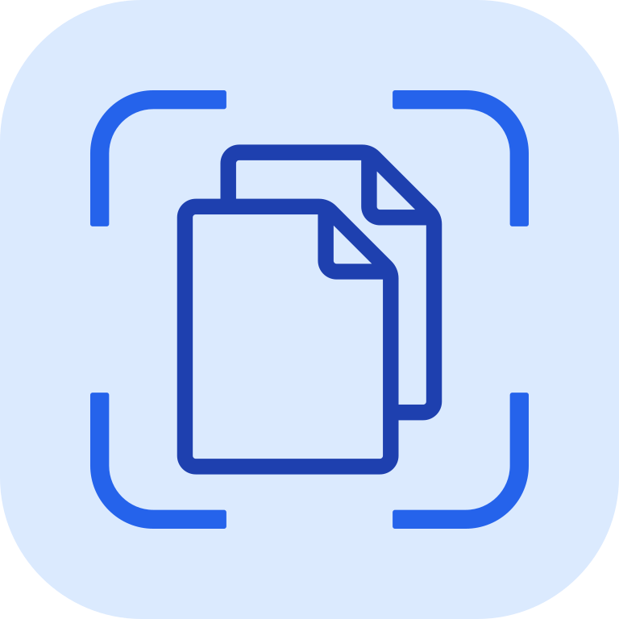
Controlli blu puliti su una superficie chiara.
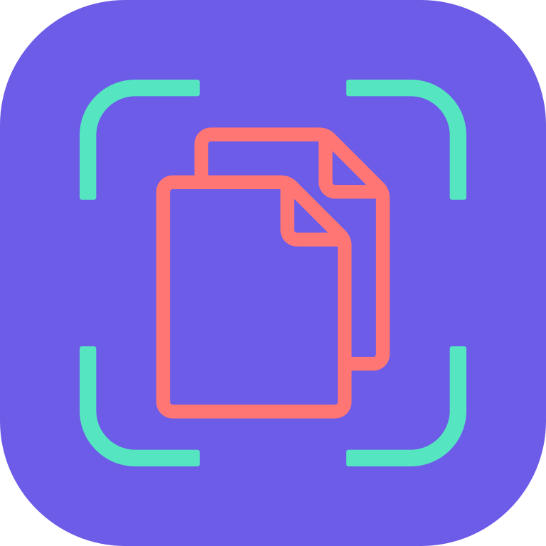
Corallo, viola e menta su antracite morbido.
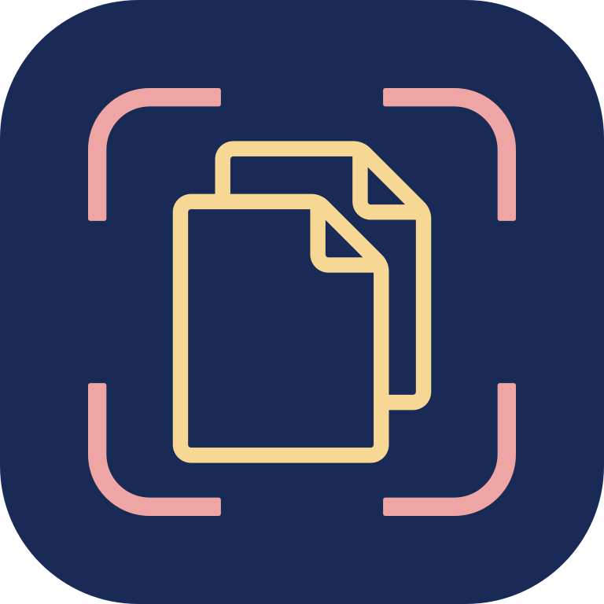
Champagne e rosa cipria su blu notte raffinato.
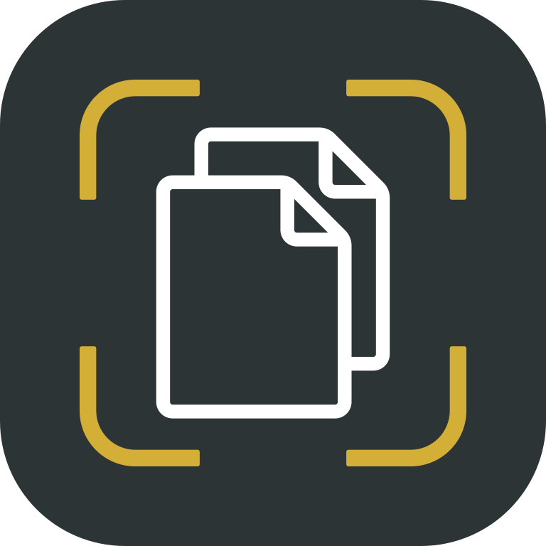
Argento freddo e oro lucido su grafite.
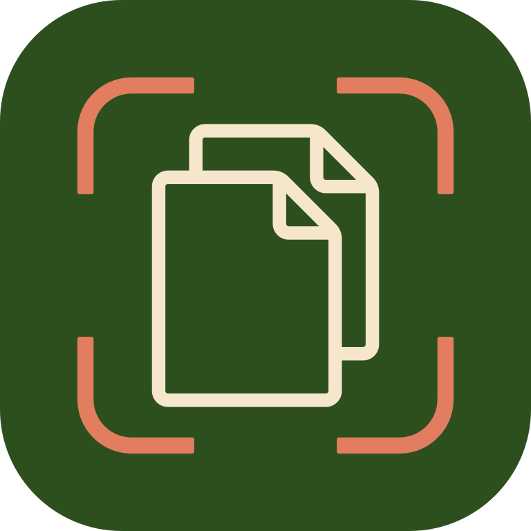
Crema caldo e terracotta su verde bosco profondo.
Disponibile in inglese, tedesco, spagnolo, francese, italiano, olandese, polacco, portoghese brasiliano, portoghese europeo, turco, cinese semplificato, giapponese, coreano e hindi.
Le tue domande, con risposta
Tutto ciò che serve sapere su privacy, archiviazione e funzioni di ProScan PDF.
No. ProScan PDF non mostra pubblicità e non aggiunge filigrane ai documenti scansionati.
Le principali funzioni di scansione, OCR e PDF vengono eseguite sul tuo dispositivo e funzionano offline. Il backup iCloud e la condivisione richiedono una connessione.
I documenti restano nella libreria locale dell’app per un accesso rapido. Quando iCloud è disponibile, le copie private possono essere conservate nel tuo account iCloud.
Foto in PDF, PDF in immagini, filigrane, compressione, fototessere, estrazione e gestione delle pagine, PDF in Word, PDF ricercabili, unione, firma e protezione con password.
Hai tre scansioni gratuite al giorno. Pro sblocca scansioni illimitate e tutti gli strumenti Pro.

Il tuo prossimo documento è a un tocco
Senza pubblicità. Senza filigrane.